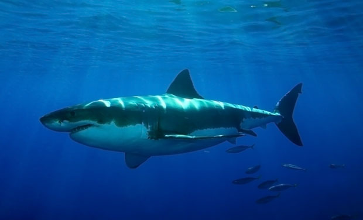

Great White Sharks lives on both the east and west coasts of North America, south of Africa and southwest Australia. They can weigh more than 2.5 tons and are more than 20 feet long. They prey on sea lions and seals. They are sneaky and use their stealth to hunt. Once they spot a prey, they will breach out of the water, catch the prey, and swim back down with the prey in their mouth. They never chew their food. They rip off the meats and swallow them whole. They can last up to a month or two without another meal.
They can smell a single drop of blood from up to a third of a mile away!
